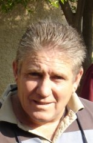

Surnames
Individuals
Sources
Places
Gallery

Leonard Glenn Roelofsz
| GRAMPS ID: | I0005 |
| Birth Name: | Leonard Glenn Roelofsz |
| Nickname: | Len |
| Gender: | male |
Events
Attributes
Parents
Families
Pedigree
- Donald Christian Roelofsz
-
- + Dorothy Greatmore Welgemoed
- 1. Rona Roelofsz
- 2. Lynnett Roelofsz
- 3. Trevor Roelofsz
- 4. Leonard Glenn Roelofsz
-
- + Avel Margaret Gerardine Roode
- 1. Donette Christine Roelofsz
- 2. Raymond William Roelofsz
- 3. Jacqueline Louise Roelofsz
- 4. Gerard Glenn Roelofsz
- + Rosemary Moralee
- 5. Donnette Roelofsz
Ancestors
Theodore Jooste Roelofsz
Donald Christian Roelofsz|
| |Anna Jeanette Mac Crocket
Leonard Glenn Roelofsz|
|Dorothy Greatmore Welgemoed